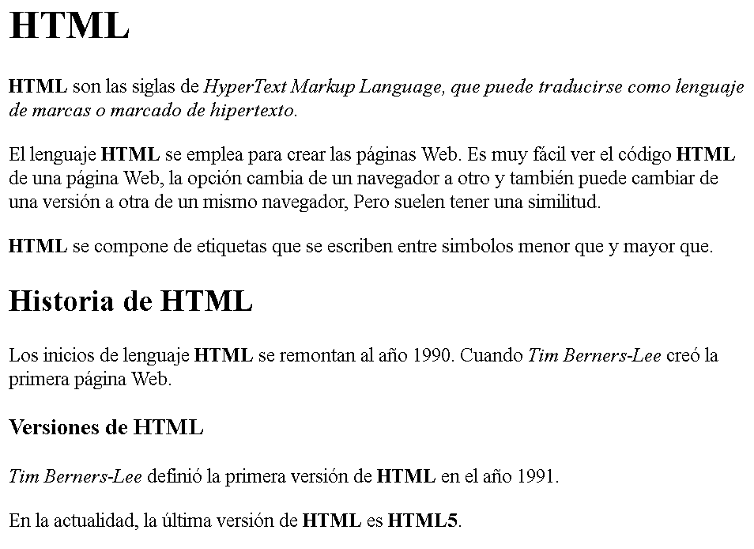
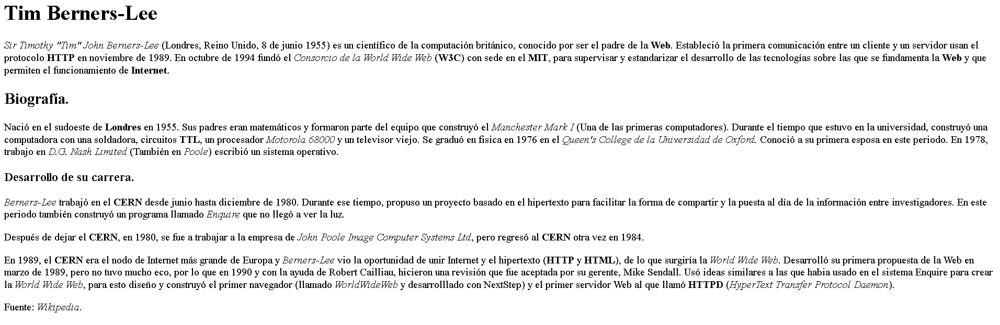

Timothy «Tim» John Berners-Lee desarrolló las ideas fundamentales que estructuran la web. Él y su grupo crearon lo que por sus siglas en inglés se denomina Lenguaje HTML (HyperText Markup Language) o lenguaje de etiquetas de hipertexto, el protocolo HTTP (HyperText Transfer Protocol) y el sistema de localización de objetos en la web URL (Uniform Resource Locator).
Realice un documento HTML, en base a la siguiente imagen:

Las etiquetas utilizadas son las siguientes: h1, h2, h3, p, i y b
Realice un documento HTML, en base a la siguiente imagen:

Las etiquetas utilizadas son las siguientes: h1, h2, h3, p, i y b.
Visita la primera página WEB de la historia: Haz clic Aquí